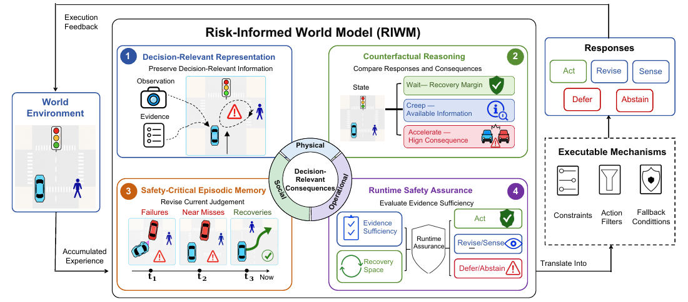
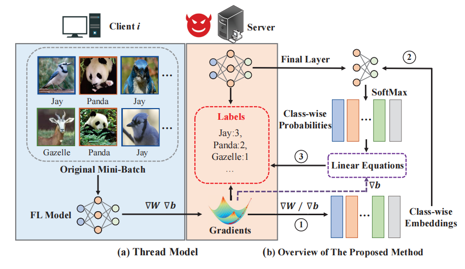
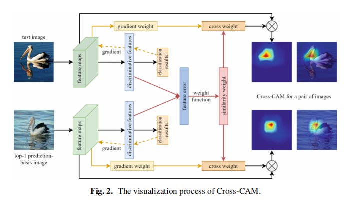
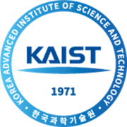

Began Ph.D. studies at KAIST, with a research focus on world models and autonomous driving.
KAIST Ph.D. Student
Kailang Ma 麻开朗
World Models & Autonomous Driving
I study how intelligent systems can understand dynamic environments, anticipate decision-relevant consequences, and act reliably under uncertainty.

Updates
News
Selected academic and professional milestones.
Notified of a provisional second-place overall result in the OnSite SOTIF Track.
Final results pendingPublished iLRG at the International Conference on Learning Representations.
Profile
About & Research
Building learning systems that reason about dynamic worlds and remain dependable when conditions change.
I am a Ph.D. student at KAIST. Before joining KAIST, I worked as a Perception Algorithm Engineer on the Scene Team at WeRide, focusing on traffic-light perception and perception-based monitoring of operational design domain (ODD) conditions.
I received an M.S. in Cyberspace Security from the School of Cyber Science and Technology at Beihang University (BUAA) in 2024 and a B.S. in Information Security from the same school in 2021. My current interests span world models, autonomous driving, embodied AI, and trustworthy machine learning.
World Models
Predictive representations of complex, evolving environments.
Autonomous Driving
Perception and decision-relevant scene understanding.
Embodied AI
Agents that perceive, anticipate, and act in the physical world.
Trustworthy ML
Uncertainty-aware systems with reliable and recoverable behavior.
Industry
Experience
End-to-end perception development, from data and learning systems to production-facing C++ components.
Perception Algorithm Engineer · Scene TeamWeRide · Perception Team
- Developed traffic-light detection and recognition systems and perception models for monitoring ODD-relevant conditions, including weather, sensor operating status, and road-surface conditions. The resulting signals supported decisions on whether prevailing conditions permitted Robotaxi operation within the defined ODD.
- Designed and implemented methods for image classification, state classification, 2D object detection, and anomaly detection, contributing across the complete development lifecycle: data management, model training, preprocessing, post-processing, and C++ fallback components.
Perception Algorithm InternWeRide
- Designed a human-in-the-loop framework for semi-automated annotation. At each iteration, a randomly sampled subset of the data pool was manually annotated to estimate the model's precision–recall curve and calibrate confidence thresholds against target precision and recall requirements.
- Added pseudo-labels that satisfied the calibrated thresholds to the training set, retrained the model, and repeated the cycle. The framework met its design objectives and increased annotation throughput by more than 5×.
Research InternDepartment of Precision Instrument · Tsinghua University
- Contributed to the development and optimization of deep-learning models for wafer defect detection.
Research Output
Selected Publications
Work on safety-critical world models, federated learning privacy, and interpretable deep learning.

Under ReviewPerspective
Rethinking World Models for Safety-Critical Embodied SystemsUnder reviewIntroduces the Risk-Informed World Model (RIWM), a decision-centric framework that connects decision-relevant representation, counterfactual reasoning, safety-critical episodic memory, and runtime safety assurance.
Generative Simulation→Cognitive Decision-Making
In PreparationSurvey
World Models for Safety-Critical Embodied Systems: From Generative Simulation to Cognitive Decision-MakingSurvey manuscript in preparationDevelops a safety-oriented taxonomy spanning representation, prediction, action conditioning, physical grounding, risk awareness, and self-improvement, and reframes evaluation around decision utility, critical-risk recall, counterfactual reasoning, uncertainty calibration, and safe action.

ICLR 2023First Author
Instance-wise Batch Label Restoration via Gradients in Federated LearningInternational Conference on Learning RepresentationsAn analytical, instance-wise label restoration method that derives a linear system from gradients and model probabilities for one-step recovery.

KSEM 2022Student First Author
Cross-CAM: Focused Visual Explanations for Deep Convolutional Networks via Training-Set TracingInternational Conference on Knowledge Science, Engineering and ManagementA training-set-aware visual explanation method combining gradient and prototype-similarity weights, with Intersection-over-Self (IoS) for measuring target focus.
Background
Education
Academic training across intelligent systems, security, and machine learning.

Beihang University (BUAA)
School of Cyber Science and Technology
M.S. in Cyberspace Security · 2024
Graduate GPA: 3.87/4.00 · M.S. Entrance Examination: 419/500 (Ranked 2nd)
B.S. in Information Security · 2021
Recognition
Honors & Awards
Selected distinctions in research, autonomous driving, and academic achievement.
2026Provisional Second Place Overall, OnSite Autonomous Driving Algorithm Challenge — Safety of the Intended Functionality (SOTIF) TrackFinal results pending
2023First Prize, WeRide Excellent Project Award — Traffic-Light Recognition and Prediction
2023Second Prize, ByteDance Security & Risk Control Bootcamp
2021–24First-Class Graduate Academic Scholarship (2022–2024) · First-Class Graduate Entrance Scholarship (2021–2022), Beihang University
2021Second Prize, National Finals, China Collegiate Computer Contest — AI Creativity Challenge (2021 Edition)ProjectCompetition
2017–19National Encouragement Scholarship (2017–2018, 2018–2019) · Second-Class Scholarship for Outstanding Undergraduate Students (2017–2018), Beihang University